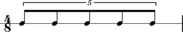

Target duration
Abjad defines the target duration of fixed-duration tuplets equal to composer-settable duration to which the tuplet prolates its contents.
The fixed-duration tuplet here carries a target duration equal to 4/8.
abjad> tuplet = FixedDurationTuplet((4, 8), Note(0, (1, 8)) * 5) abjad> Beam(tuplet) abjad> measure = Measure((4, 8), [tuplet]) abjad> staff = RhythmicStaff([measure]) abjad> tuplet.duration.contents Rational(5, 8) abjad> show(staff)
abjad> tuplet.duration FDTupletDurationInterface(1/2)
The tuplet contents sum to 5/8. But tuplet target duration always equals 4/8.
The
_FDTupletDurationInterfaceimplements no explicittargetattribute. Target duration is instead implicit in the interpreter representation of the duration interface itself. I propose changing this so that we read from and assign totuplet.duration.targetinstead.